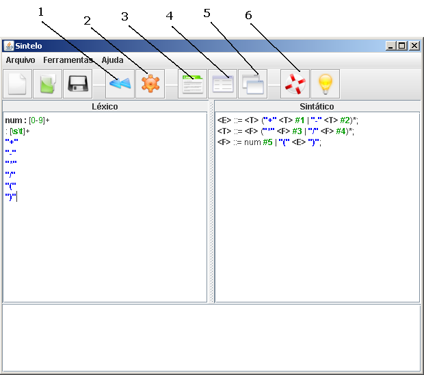
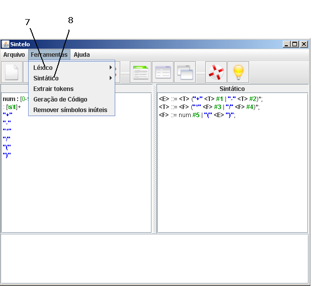

Voltar
Índice
Voltar
Índice
VISÃO GERAL
Sintelo e um ambiente didático que auxilia o professor no ensino da análise léxica e sintáticas e ao alunos proporciona praticar os conhecimentos adquiridos. Este software foi desenvolvida em Java, sendo possível utiliza-lá em qualquer ferramenta que possua a máquina virtual java.
Através deste software é possível gerar analisadores léxicos e sintáticas, através de especificações léxicas, baseadas em tokens e expressões regulares e especificações sintáticas, baseadas em gramáticas livres de contexto. Com estas especificações, o software permite também fazer simulação do processo, sendo possível visualizar o passo a passo.
INTERFACES DO SOFTWARE

Ajuda

Léxico – tabela de transição
Sintático – tabela de parse e First e Follow